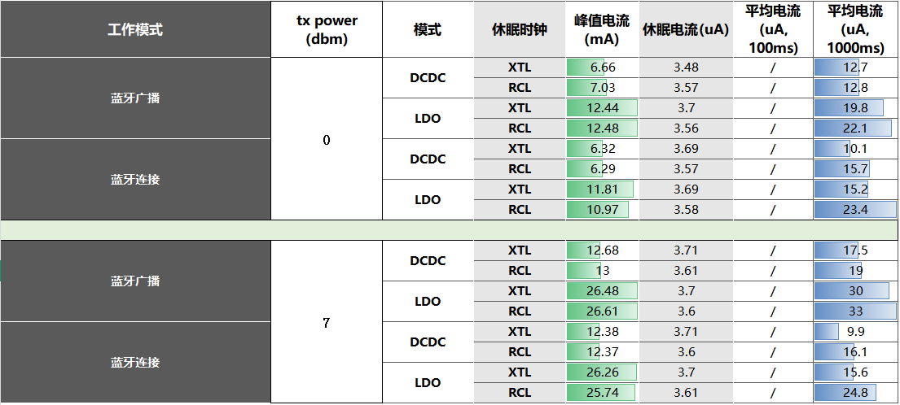
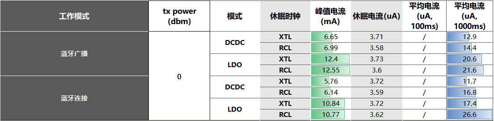

NDK 蓝牙开发指南¶
本文主要通过一些示例，介绍蓝牙应用开发过程中常用的方法以及可能遇到的问题。
1 基础指标¶
1.1 功耗¶
蓝牙在不同的工作模式下功耗如下表所示：
测试条件：
基于例程
nimble\samples\ble_periph_hr发射功率：0 dBm，广播数据：11 Bytes，PAN1070和PAN1010发射功率和广播数据一致；
测试配置:
CONFIG_SOC_DCDC_PAN1070,CONFIG_PM_ENABLE,CONFIG_LOW_SPEED_CLOCK_SRC测试选项：LOW_POWER_TESET_CI_100MS和LOW_POWER_TESET_CI_1000MS

PAN1070UA1A EVB 核心板功耗测试数据¶

PAN1070UA1A EVB 核心板配置latency功耗测试数据¶
PAN1010S9FA EVB 核心板功耗测试数据¶
2 开发流程¶
2.2 参考相关例程¶
蓝牙开发需要了解一些蓝牙协议相关的知识，可以参考蓝牙协议规范，网上也有很多协议的介绍，此处不作赘述。
当前SDK中提供了一些蓝牙相关的例程，涵盖了central、peripheral等。
在进行蓝牙开发之前，建议先看一下相关的文档，磨刀不误砍柴工，相信这些例程会对你的开发有所帮助。
2.3 了解蓝牙app代码的基本框架¶
2.3.1 蓝牙初始化¶
我们以ble_periph_hr为例。芯片上电启动以后，进入main() 函数， 然后执行用户初始化函数setup(), 在setup() 函数中调用 app_ble_init（） 函数初始化和启动蓝牙
int main(void)
{
/* user initialization entry. */
setup();
/**
* "main()" is a thread if CONFIG_OS_EN=1
* "main()" is a main entry if CONFIG_OS_EN=0
*
* If the user is using the main thread, you need t·····o enable the following code
* and add the user's processing logic to the "loop()" function.
*/
#if 0
while(1)
{
loop();
}
#endif
}
/**
*******************************************************************************
* @brief user initialization entry
*******************************************************************************
*/
void setup(void)
{
/* ble stack initialization. */
app_ble_init();
/**
* TODO: user add application initialization code in here.
*/
}
void app_ble_init(void)
{
/* BLE Stack Initialization. */
pan_ble_stack_init(app_ble_pre_init_cb, app_ble_enabled_cb);
}
pan_ble_stack_init() 函数是ble stack初始化和启动函数，该函数将自动创建ble thread以处理蓝牙相关的数据和事件。 这个函数提供了两个回调函数，如下：
ble_stack_pre_init_cb
ble stack 预初始化回调, 这个回调用于在ble stack启动之前初始化一些与ble stack相关的参数，例如设置mac address/ 注册 GATT services / 初始化SDP等 。
注意：mac address设置 / GATT services 注册/ SDP初始化 必须在这个回调中完成。ble_stack_enabled_cb
该回调指示ble stack已经启动完成，用户可以在这个回调中启动adv或者scan或者干一些其他的事。
2.3.2 蓝牙广播或者扫描¶
广播函数：
app_ble_gap_event 是 ble event处理回调。
void app_ble_advertise_start(void)
{
struct ble_gap_adv_params adv_params;
struct ble_hs_adv_fields fields;
int rc;
(void)rc; //remove compiler warning
/* set advertising data. */
memset(&fields, 0, sizeof(fields));
fields.flags = BLE_HS_ADV_F_DISC_GEN |
BLE_HS_ADV_F_BREDR_UNSUP;
fields.name = (uint8_t *)device_name;
fields.name_len = strlen(device_name);
fields.name_is_complete = 1;
fields.uuids16 = (ble_uuid16_t[]) {
BLE_UUID16_INIT(BLE_SVC_HRS_UUID16),
};
fields.num_uuids16 = 1;
fields.uuids16_is_complete = 1;
rc = ble_gap_adv_set_fields(&fields);
if (rc != 0) {
APP_LOG_ERR("setting advertisement data failed; rc=%d\n", rc);
app_assert(rc == 0);
}
/* set advertising parameter. */
memset(&adv_params, 0, sizeof(adv_params));
adv_params.conn_mode = BLE_GAP_CONN_MODE_UND;
adv_params.disc_mode = BLE_GAP_DISC_MODE_GEN;
adv_params.itvl_min = BLE_GAP_ADV_ITVL_MS(CONFIG_ADV_INTRVL_MS);
adv_params.itvl_max = BLE_GAP_ADV_ITVL_MS(CONFIG_ADV_INTRVL_MS + 10);
/* start adv with "adv_params" */
rc = ble_gap_adv_start(own_addr_type, NULL, BLE_HS_FOREVER, &adv_params,
app_ble_gap_event, NULL);
if (rc != 0) {
APP_LOG_ERR("enabling advertisement failed; rc=%d\n", rc);
return;
}
APP_LOG_INFO("BLE adv start...\n");
}
扫描函数：
app_ble_gap_event 是 ble event处理回调。
void app_ble_scan_start(void)
{
struct ble_gap_disc_params disc_params;
int rc;
(void)rc; //remove compiler warning
/* set scan parameter. */
disc_params.passive = 1;
disc_params.itvl = BLE_GAP_SCAN_ITVL_MS(60);
disc_params.window = BLE_GAP_SCAN_WIN_MS(50);
disc_params.filter_policy = 0;
disc_params.limited = 0;
disc_params.filter_duplicates = 0;
/* start scan with "disc_params" */
rc = ble_gap_disc(own_addr_type, BLE_HS_FOREVER, &disc_params, app_ble_gap_event, NULL);
if (rc != 0) {
APP_LOG_ERR("Error initiating GAP discovery procedure; rc=%d\r\n", rc);
}
APP_LOG_INFO("scan starting\r\n");
}
2.3.3 GATT服务注册¶
GATT服务注册如下：
void app_ble_svc_init(void)
{
/* Register DIS service */
ble_svc_dis_init();
/* Register HRS service */
ble_svc_hrs_init();
/* register call-back（options） */
ble_hs_cfg.gatts_register_cb = app_ble_svr_register_cb;
ble_hs_cfg.gatts_register_arg = NULL;
}
NDK 提供了一系列的配置文件供用户使用:
如果用户要使用的service在profiles中有实现，可以直接添加相关的实现文件，然后调用初始化函数即可注册；
如果用户使用的service在profiles中没有实现，用户需要自己添加service的实现，可以参考profiles文件中的任意一个service的实现。
2.3.4 GAP事件处理¶
Nimble提供了一系列的事件供用户使用。用户需要注册ble event处理回调（ble event处理回调在start adv或者start scan时注册，参看”2.3.2 蓝牙广播或者扫描”的相关内容)。需要注意的是：在adv和scan启动时注册的GAP event回调可以是同一个函数，也可以是不同的函数，具体使用哪一个由用户根据自己的习惯来。
Nimble GAP事件如下：
#define BLE_GAP_EVENT_CONNECT 0 /*!< connection complete event. */
#define BLE_GAP_EVENT_DISCONNECT 1 /*!< disconnection complete event */
/* Reserved 2 */
#define BLE_GAP_EVENT_CONN_UPDATE 3 /*!< connection parameter update complete event. */
#define BLE_GAP_EVENT_CONN_UPDATE_REQ 4 /*!< RX LL connection param req */
#define BLE_GAP_EVENT_L2CAP_UPDATE_REQ 5 /*!< RX slave L2cap connection update req. */
#define BLE_GAP_EVENT_TERM_FAILURE 6 /*!< */
#define BLE_GAP_EVENT_DISC 7 /*!< adv report event */
#define BLE_GAP_EVENT_DISC_COMPLETE 8 /*!< scan duration expired event */
#define BLE_GAP_EVENT_ADV_COMPLETE 9 /*!< adv duration expired event */
#define BLE_GAP_EVENT_ENC_CHANGE 10 /*!< Encrypt Changed event */
#define BLE_GAP_EVENT_PASSKEY_ACTION 11 /*!< PinCode display/request event */
#define BLE_GAP_EVENT_NOTIFY_RX 12 /*!< Central Rx notify event. */
#define BLE_GAP_EVENT_NOTIFY_TX 13 /*!< Peripheral Tx notify cmpl event. */
#define BLE_GAP_EVENT_SUBSCRIBE 14 /*!< Enable/Disable Peripheral Notify & Indicate status event. */
#define BLE_GAP_EVENT_MTU 15 /*!< MTU update complete event. */
#define BLE_GAP_EVENT_IDENTITY_RESOLVED 16 /*!< indicate peer address is RPA event. */
#define BLE_GAP_EVENT_REPEAT_PAIRING 17 /*!< The user is asked whether to delete the existing pair info to create a new pair. */
#define BLE_GAP_EVENT_PHY_UPDATE_COMPLETE 18 /*!< PHY update complete event. */
#define BLE_GAP_EVENT_EXT_DISC 19 /*!< extended adv report event. */
#define BLE_GAP_EVENT_PERIODIC_SYNC 20 /*!< period adv sync event. */
#define BLE_GAP_EVENT_PERIODIC_REPORT 21 /*!< period adv report event. */
#define BLE_GAP_EVENT_PERIODIC_SYNC_LOST 22 /*!< period adv sync loss event. */
#define BLE_GAP_EVENT_SCAN_REQ_RCVD 23 /*!< rx scan req event. */
#define BLE_GAP_EVENT_PERIODIC_TRANSFER 24 /*!< */
#define BLE_GAP_EVENT_PATHLOSS_THRESHOLD 25 /*!< */
#define BLE_GAP_EVENT_TRANSMIT_POWER 26 /*!< */
GAP event 回调如下：
int app_ble_gap_event(struct ble_gap_event *event, void *arg)
{
struct ble_gap_conn_desc out_desc;
switch (event->type)
{
case BLE_GAP_EVENT_CONNECT:
APP_LOG_INFO("connection %s; status=%d\n", event->connect.status == 0 ? "established" : "failed",
event->connect.status);
if (event->connect.status != 0) {
app_ble_advertise_start();
conn_handle = 0xFFFF;
break;
}
ble_gap_conn_find(event->conn_update.conn_handle, &out_desc);
APP_LOG("\t-peer_ota_addr:%s(at:%d)\r\n"
"\t-peer_id_addr:%s(at:%d)\r\n"
"\t-conn_intvl:%d us\r\n"
"\t-latency:%d\r\n"
"\t-to:%d ms\r\n",
addr_to_str(out_desc.peer_ota_addr.val),
out_desc.peer_ota_addr.type,
addr_to_str(out_desc.peer_id_addr.val),
out_desc.peer_id_addr.type,
out_desc.conn_itvl*1250,
out_desc.conn_latency,
out_desc.supervision_timeout*10);
conn_handle = event->connect.conn_handle;
break;
case BLE_GAP_EVENT_DISCONNECT:
APP_LOG_INFO("disconnect; reason=0x%02x\n", (uint8_t)event->disconnect.reason & 0xff);
conn_handle = 0xFFFF;
app_ble_advertise_start();
break;
case BLE_GAP_EVENT_ADV_COMPLETE:
APP_LOG_INFO("adv duration expired - restart adv\n");
app_ble_advertise_start();
break;
case BLE_GAP_EVENT_SUBSCRIBE:
APP_LOG_INFO("subscribe event; cur_notify=%d, val_handle=%d\n",
event->subscribe.cur_notify, hrs_hrm_handle);
if(event->subscribe.reason == BLE_GAP_SUBSCRIBE_REASON_WRITE)
{
if (event->subscribe.attr_handle == hrs_hrm_handle) {
notify_state = event->subscribe.cur_notify;
app_ble_hr_tx_timer_start();
}
else if (event->subscribe.attr_handle != hrs_hrm_handle) {
notify_state = event->subscribe.cur_notify;
app_ble_hr_tx_timer_stop();
}
}
// indicate user that connection terminate.
else if(event->subscribe.reason == BLE_GAP_SUBSCRIBE_REASON_TERM){
notify_state = false;
app_ble_hr_tx_timer_stop();
}
break;
case BLE_GAP_EVENT_NOTIFY_TX:
APP_LOG_INFO("notify ok\n");
break;
case BLE_GAP_EVENT_MTU:
APP_LOG_INFO("mtu update event; conn_handle=%d mtu=%d\n",
event->mtu.conn_handle,
event->mtu.value);
break;
case BLE_GAP_EVENT_CONN_UPDATE:
{
ble_gap_conn_find(event->conn_update.conn_handle, &out_desc);
APP_LOG_INFO("conn upd cmpl: conn_handle:%d, itvl:%d us, latency:%d, to:%d ms\n",
out_desc.conn_handle,
out_desc.conn_itvl * 1250,
out_desc.conn_latency,
out_desc.supervision_timeout*10);
break;
}
default:
break;
}
return 0;
}